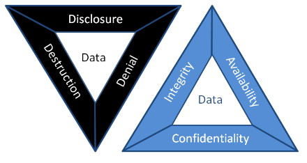

Confidentiality:
Protecting sensitive information, whether its personal, financial, operational, or strategic, means ensuring it reaches only to those with a genuine need to know. It’s keeping data secret "Encrypted" and actively managing who can view, share, or handle it, and under what circumstances. Strong confidentiality practices build trust with customers and partners, support legal compliance (GDPR, HIPAA, PCI DSS), and guard against the reputational, financial, and legal fallout of a breach.
- When It Is Compromised:
- The moment the data spills beyond its trust boundary, through a phishing scam, an unencrypted laptop, a misconfigured cloud storage bucket, it’s exposed forever. Once information is seen, it cannot be “un-seen,” and the consequences ripple outward immediately.
- Example:
- A hospital’s electronic health-record system fell victim to credential stuffing when attackers used leaked passwords to grab patient files. To prevent a repeat, the IT team rolled out multi-factor authentication, enforced disk and network level encryption, and trained staff to recognize phishing attempts which will result in dramatically reducing the attack surface and meeting HIPAA’s strict privacy requirements.
- Best Practices for Confidentiality:
- Implement Access Controls: Use role-based access control (RBAC) or mandatory access control (MAC) to grant permissions strictly on a need-to-know basis, ensuring that each user or service holds only the rights required for their tasks.
- Encryption Everywhere:
- - At Rest: Use strong standards like AES-256/CAST256 to protect stored data (databases, files, devices..etc).
- - In Transit: Enforce TLS (v1.2+) for all data moving across networks. This renders data unreadable without the correct decryption key, even if intercepted or accessed.
- Classify and Label Data: Categorize data by sensitivity, public, confidential, restricted, private and apply appropriate handling procedures.
- Use Multi-Factor Authentication (MFA): Require multiple verification factors such as password, biometrics, or tokens to verify user identity before granting access.
- Conduct Regular Audits and Monitoring: Implement logging and monitoring tools to track access attempts and detect anomalies.
- Security Training: Educate employees on confidentiality risks, such as phishing and social engineering.
- Apply Physical and Environmental Controls: Secure physical access to data centers and devices with measures like locked rooms, CCTV, and badge systems to prevent unauthorized entry.
- Data Loss Prevention (DLP): Deploy DLP solutions to monitor network traffic, endpoints, and cloud storage, identifying and blocking unauthorized attempts to transfer or exfiltrate sensitive data.
- Clear Policies & Enforcement: Create clear data protection policies, including data retention and disposal guidelines, and ensure they align with organizational risk management strategies.
Integrity:
It ensures that information remains accurate, complete, and unaltered except through authorized processes. From code in a software update to critical financial records, integrity means everyone can trust that what they see is exactly what was intended.
- When It Is Compromised:
- Integrity is violated any time information is altered, deleted, or fabricated without authorization whether intentionally or accidentally. Examples include ransomware encrypting databases, malicious insiders tampering with records, software bugs corrupting files, and hardware faults flipping bits.
- Example:
- During the 2016 Bangladesh Bank cyber-heist, attackers manipulated SWIFT payment instructions to siphon off $81 million. The bank’s later adoption of digital signatures, automated change-management controls, and real-time transaction hashing has since closed that loophole.
- Best Practices for Integrity:
- Cryptographic Hashing: Use cryptographically algorithms such as SHA-256, SHA-3, to generate checksums for detecting unauthorized changes.
- Digital Signatures & PKI: Implement PKI (Public Key Infrastructure) to sign documents, ensuring they can't be altered undetected.
- Strict Access Controls & Audit Trails: Enforce strict access controls and audit trails to track who made changes, what was changed, and when.
- Regular Backups and Validation: Automate backups with integrity checks, and use tools like intrusion detection systems (IDS) to monitor for alterations.
- Secure Development Practices: Enforce code reviews, static analysis, and input-validation checks to catch bugs that might corrupt data.
- Staff Awareness: Focus on educating staff about the importance of data handling to minimize accidental or intentional integrity breaches.
Availability:
Availability ensures systems and data are accessible and operational when needed—whether a customer is making a purchase, an engineer is deploying a fix, or a clinician is retrieving life-critical patient records. Any downtime can lead directly to lost revenue, reputational damage, or even threats to human life.
- When Availability Breaks Down:
- Distributed denial-of-service (DDoS) attacks, hardware failures, power outages, or simply under-provisioned infrastructure can all interrupt service, often at the most inopportune moment.
- Example:
- A major online retailer suffered a week-long outage during peak shopping season. In response, they deployed geographically distributed failover clusters, integrated DDoS mitigation services via their CDN, and instituted capacity-planning reviews every quarter, keeping their storefront online even under unprecedented load.
- How to Ensure Availability:
- Redundancy & High-Availability Architectures: Use failover clusters, load balancers, and multiple data-center regions to distribute risk.
- Disaster-Recovery Drills: Simulate full data-center loss and recovery processes regularly to validate runbooks and response times.
- DDoS Protection: Deploy tools like firewalls and content delivery networks (CDNs) to mitigate attacks.
- Proactive Monitoring: Use AI-driven tools for real-time alerts and predictive maintenance.
- Capacity Planning: Scale resources based on demand to avoid overloads.
- Load Balancing: Distributing traffic to avoid overloads.
- Backup and Recovery Protocols: Implement automated backups with quick restore options, ensuring data is always recoverable.
DAD
Security teams typically rely on the CIA triad (Confidentiality, Integrity, Availability), but the DAD model inverts this perspective to focus on what attackers aim to achieve (Disclosure, Alteration, and Destruction). Framing threats in DAD terms helps managers understand the concrete business impact of a breach and prioritize controls that directly prevent data leaks, unauthorized modifications, and system outages.
- 1. Disclosure (Unauthorized Disclosure):
- How it happens: Disclosure can be from external hacker such as cybercriminals breaching firewalls, internal mistakes like an employee emailing sensitive files to the wrong person, or even social engineering tactics where attackers trick someone into revealing info.
- Who it affects: Anyone with sensitive data is at risk, think businesses handling customer records, healthcare providers with patient info, or governments with classified documents.
- When and where it occurs: It can happen anytime data is in transit, over the internet or at rest, stored in a database. Common hotspots include cloud storage, email systems, or unsecured networks.
- 2. Alteration (Unauthorized Modification):
- How it happens: Alteration can be malicious like a ransomware encrypts files and demands payment to "restore" them, or insider sabotage, a disgruntled employee edits prices in an e-commerce database. Common methods include cyber attacks like SQL injection or insider threats where someone with access makes unauthorized changes.
- Who it affects: It impacts data creators, users, and stakeholders who rely on that information such as finance teams using altered reports or engineers depending on tampered designs.
- When and where it occurs: This is a risk during data processing, storage, or transmission.
- 3. Destruction (Unauthorized Deletion):
- How it happens: Destruction can be intentional like a hackers wipe servers after a ransomware attack ("wiper malware") or an employee deletes critical project files before being fired. It might involve cyber attacks, natural disasters, or even insider actions.
- Who it affects: Everyone from IT staff managing systems to end-users relying on data access, and it can impact customers if services go down.
- When and where it occurs: This is a threat during system failures, attacks, or maintenance. Common places include servers, cloud storage, or even physical media like hard drives.
- Why it's sneaky: Unlike disclosure or alteration, destruction is permanent if not backed up, leading to downtime that can damage reputation and revenue.
Confidentiality is compromised whenever sensitive information is accessed or shared without authorization, whether it’s leaked, stolen, or inadvertently exposed. Such
breaches voilates privacy, enable identity theft, and can hand strategic advantages to competitors. In the CIA triad, confidentiality controls aim to prevent these
incidents, while the DAD model shows how attackers accomplish them.
Why does it matter? In today's data, a single disclosure can result in massive fines such as those imposed under GDPR, loss of customer trust, or even legal
action. By grasping the full impact of disclosure, managers can understanding and better prioritize data protection measures and ensure compliance.
How to address it: To prevent disclosure, focus on strong access controls, encryption, and employee awareness. For instance, using tools like data loss prevention (DLP) software can scan and block sensitive data from leaving your network.
Data alteration occurs when information is modified without authorization whether through deliberate tampering, software errors, or malicious scripts, making it inaccurate or
misleading. Such breaches erode trust in your systems, drive flawed decisions, incur financial losses, and in critical contexts like healthcare, can threaten lives. In the CIA
triad, integrity guarantees data remains unaltered, while the DAD model highlights the attack paths used to violate it.
Why care? Altered data can spread misinformation, cause operational chaos, or enable fraud. For business leaders, it's a reminder to invest in data validation and monitoring.
How to address it: Use techniques like digital signatures and input validation to detect changes. Regular backups and monitoring tools can help spot alterations early, giving you a chance to correct them before damage spreads.
Data destruction happens when information is deleted or rendered irretrievable without authorization, whether through malicious attacks, human error, or system misconfiguration.
This attack on availability can paralyze operations, disrupt services, and lead to permanent loss of critical records if robust recovery mechanisms aren’t in place.
Why is it critical? In a world where data is important, losing it can halt business processes, violate regulations such as data retention laws, and cost a fortune in recovery efforts.
How to address it: Focus on redundancy, like having multiple copies of data in different locations, and regular testing of recovery plans. Tools such as immutable backups, that can't be deleted easily, and disaster recovery drills can minimize the impact.

Identification
is the first step in any secure access flow, it’s how a system figures out
- Example:
- To ensure identification:
- Enforce uniqueness: Never allow two users or devices to share the same identifier.
- Employee IDs: Assigning unique identification numbers or badges to employees within an organization. These IDs are often used for access control and time-tracking systems.
- Usernames: Providing a unique username associated with a specific user account. This is a common method in most online and computer-based systems.
- Email Addresses: Using email addresses to identify users, especially in online services where the email is often linked to an account.
- Device IDs: Assigning unique identifiers to devices like computers, smartphones, or IoT devices. Device IDs help to identify and manage devices within a network.
- Smart Cards: Providing identification through physical cards containing embedded chips that store unique identifiers. Smart cards are commonly used for secure access to buildings, systems, and networks.
- Audit and monitor: Track identification events that are successful or failed, to detect anomalies such as repeated attempts to claim the same identity.
When you sign into a company app, you usually type your username or work email. That name links to your profile in the system. Behind the scenes, the application looks up that identifier in its identity store, typically a directory service like Active Directory or an identity provider (IdP) such as Azure AD. Once it finds a matching record, it knows which user account you control, what groups you belong to, and what rights you’ve been granted. However, many organizations now use biometrics like fingerprints, facial scans, or and others as your unique ID for quick, secure access to buildings or critical systems. In that case, your biometric template is stored in hashed or encrypted form, in the identity store. When you scan your finger or face, the system converts your scan into a template, compares it against the stored template, and if there’s a close match, identifies you without requiring you to type anything.
Authentication:
Is the step where the system makes sure you really are who you said you are before it hands over any access. Whether you type a password, scan your fingerprint, present a security token, or use a certificate, the system checks that proof against its trusted records. Only when that check passes do you get permission to move forward.
- Example:
- Something you know: Passwords, PINs proves you’ve got the secret.
- Something you have: A mobile authenticator, hardware token, or device certificate, proves you physically or digitally possess a trusted object.
- Something you are: Biometrics like fingerprints or facial scans, ties the claim to your unique biological traits.
- Organizations employ a variety of authentication methods:
- Passwords: The most ubiquitous form, where a user enters a secret string linked to their account. While simple, passwords are vulnerable to guessing, phishing, and reuse so strong password policies, regular rotation, and breach monitoring are essential.
- Multi-Factor Authentication (MFA): By requiring two or more proofs of identity, something you know, something you have, or something you are, MFA dramatically raises the bar for attackers.
- Biometrics: Using unique physical or behavioral traits, fingerprint, facial map, voiceprint, or iris scan, biometrics offer convenience and security. High-security facilities, like data centers or research labs, may combine fingerprint readers with retina scans to ensure only authorized personnel gain entry.
- Certificate-Based Authentication: Digital certificates issued by a trusted Certificate Authority embed a public key and identity information. Devices or users present these certificates during a TLS handshake or network login, ensuring a cryptographically verifiable identity. This approach is common for VPN access or secure device enrollment in corporate networks.
Authentication is precisely about answering that question, “Are you truly who you say you are?”. By challenging your initial identity claim with evidence. In modern systems, that evidence comes from a mix of factors:
When these factors are validated against authoritative, the system gains high confidence that the person or device is genuine. Layering multiple factors drastically reduces the chance that an attacker even one with stolen credentials can slip through.
Authorization:
Is the step that decides exactly “what you can/can't do, view, read, write, execute” after your identity is confirmed. It matches authenticated users, systems, or devices to the permissions and resources they’re allowed to access. By enforcing authorization policies whether role-based, attribute-based, or policy-driven base, organizations keep each actor operating strictly within their assigned boundaries, preventing both accidental mistakes and intentional abuse.
- Example:
- Authorization relies on several components:
- Access Control Models: Role-Based Access Control (RBAC) assigns permissions according to predefined roles, for example, a “Finance Manager” might have read/write access to budgeting spreadsheets but no ability to modify payroll systems. Attribute-Based Access Control (ABAC) goes further, evaluating contextual attributes sets time of day, device location, or transaction amount before granting access.
- Privilege Management: Permissions should be granular. Rather than handing every user broad “Administrator” rights, systems can grant discrete privileges such as the ability to view logs, deploy software updates, or delete outdated records, ensuring users have just enough power to fulfill their duties.
- The Principle of Least Privilege: By default, every identity starts with zero privileges and gains only the minimal rights necessary. This tightly scoped approach dramatically reduces the blast radius of compromised accounts or insider mistakes.
Imagine a secure data center access system: when Alice attempts to enter, the authorization engine checks her role which is “Network Engineer” and her clearance level (Tier 2). Her policy allows her to unlock the primary server room door but doesn’t grant access to the power control panel. Meanwhile, Bob, who holds the “Facilities Manager” role, can open any equipment bay and manage environmental controls but cannot access the server racks themselves.
Auditing:
Auditing is a systematic review and examination of systems, processes, and records to confirm they operate as intended and comply with policies, standards, or regulations. In cybersecurity, auditing means collecting and analyzing logs, configuration settings, user activity, and change histories to spot gaps, misconfigurations, or unauthorized actions. A solid audit uncovers weaknesses before attackers exploit them, guides corrective actions, and provides evidence of compliance for regulators and stakeholders.
- 1. Planning the Audit:
- Every successful audit begins with a clear roadmap. In this phase, auditors define the scope for example, cloud infrastructure, on-premise servers, or business-critical applications, articulate objectives such as GDPR compliance or control effectiveness testing, select tools and techniques, and assemble a multidisciplinary team of IT specialists, compliance officers, and process owners.
- 2. Gathering Evidence: Auditors collect a blend of documentary, observational, and technical proof:
- Documentary: Policies, standard operating procedures, configuration files.
- Observational: Walk-throughs of change-management or incident-response processes.
- Technical: System logs, vulnerability-scan reports, network traffic captures.
- Interviews: One-on-one conversations with system administrators, developers, and end-users to validate real-world practices.
- 3. Evaluating Controls:
- With evidence in hand, auditors assess preventive measures such as firewalls, encryption, detective controls like SIEM alerts, IDS signatures, and corrective processes like backup restorations, patch-deployment workflows. Penetration tests and configuration reviews often illuminate weak spots that automated scans might miss.
- 4. Risk Assessment & Gap Analysis:
- Findings are mapped against regulatory mandates (HIPAA, PCI DSS, ISO 27001) and corporate policies. Risks are rated by potential impact to confidentiality, integrity, and availability. For instance, discovering unpatched servers in a publicly-facing network gateway might be classified as HIGH RISK due to the immediate threat surface.
- 5. Continuous Monitoring of Audit Trails:
- Beyond the one-time inspection, robust auditing demands ongoing log review. Privileged-user activity, configuration changes, and security events are monitored for anomalies such as an off-hours configuration push to production servers which could signal insider abuse or compromised credentials.
- 6. Reporting & Remediation:
- Auditors compile a report that opens with an executive summary, followed by detailed findings, risk ratings, and prioritized remediation recommendations. For example, they might advise implementing automated patch-management for critical CVEs or tightening access-control policies for database servers.
- 7. Follow-Up & Verification:
- True audit maturity shines when teams address findings promptly. Auditors schedule follow-up reviews to confirm that vulnerabilities have been remediated and controls updated, closing the loop and demonstrating continuous improvement.
Accountability:
Accountability ensures that every action on a system is traceable back to the individual or process that performed it. By maintaining detailed audit trails, unique user identifiers, and non-repudiation controls like digital signatures, organizations can hold people and machines responsible for their behavior, deterring misuse, simplifying investigations, and enforcing policies.
- Example:
- Key aspects:
- Complete Traceability: Every login, file access, configuration change, and system alert is captured in immutable audit trails. These records, time-stamped are linked to unique identifiers, allows security teams to replay events, determine root causes, and isolate compromised accounts or endpoints.
- Unambiguous User Identification: Assign each individual and service a distinct digital identity whether it’s a username, employee badge number, or X.509 certificate so that no action can be performed anonymously. By correlating activities with these identifiers, organizations gain clarity on who did what, when, and from where.
- Chain of Custody in Forensics: When a breach or insider threat emerges, preserving the integrity of digital evidence is paramount. From the moment an image is captured off a suspect machine, through secure storage and documented hand-offs, every step is logged. This meticulous record‐keeping ensures that evidence stands up in court and that no one can claim tampering.
- Rigorous Audit Log Management: Logs are only as valuable as the processes around them. Regular log reviews combined with automated alerting for anomalous patterns, like privilege escalations outside normal business hours enable rapid detection of policy violations. Archiving logs in write-once, read-many (WORM) storage prevents back-dated edits or deletion.
- Enforced Consequences: Accountability isn’t mere documentation; it’s action. Clear, published policies outline disciplinary measures for infractions up to and including termination or legal referral. When employees and contractors know that violations of access controls or data-handling rules will trigger formal reviews and sanctions, compliance rates improve dramatically.
- Transparent Communication: Stakeholders, from board members to end users, must understand how data is protected, how incidents are handled, and what their personal responsibilities entail. Publishing quarterly security reports and holding “lessons-learned” briefings after tabletop exercises fosters a culture of shared ownership.
- Defined Ownership and Roles: Using a RACI (Responsible, Accountable, Consulted, Informed) matrix, organizations assign clear authority for each security domain to be its patch management, incident response, or data classification. This removes ambiguity and ensures that no critical control is left without an owner.
- Regulatory and Legal Alignment: Accountability extends to demonstrating compliance with GDPR, HIPAA, SOX, or industry-specific mandates. By mapping controls to regulatory requirements and retaining evidence such as consent records or change-approval logs, and organizations can produce audit artifacts on demand.
Imagine a system administrator named Alice who updates the company firewall rules at 3:15 AM to block a newly discovered malicious IP range. The moment she clicks “Apply” the change is recorded in an immutable audit log that captures her username, the exact timestamp, the previous and new rule sets, and the source machine’s identifier. Later that day, when a service outage occurs, the incident response team reviews the log, sees Alice’s change, and pinpoints it as the cause. Because every detail is tied to her account, there’s a clear trail showing who made the change, when, and from where ensuring full accountability and enabling the team to both correct the rules and refine update processes to prevent similar mistakes.
Authenticity:
Authenticity guarantees that a message, piece of data, or identity really comes from the claimed source and hasn’t been forged or tampered with. In practice, systems achieve this by using digital signatures, certificates, or message authentication codes (MACs) so you can verify both who sent something and that its contents remain exactly as they were when created.
- Authenticity means you can trust that everything from files and messages to logins and websites, really comes from who or what it claims to. Here’s how it works in everyday terms::
- Data Authenticity: Imagine downloading a piece of software. The developer “signs” it with a digital signature. Your computer checks that signature to make sure the installer wasn’t tampered with after it left the developer’s hands.
- Message Authenticity: When you send a secure chat or email, a Message Authentication Code (MAC) tags the content. If anyone tries to sneak in a malicious link or alter your words, the mismatch alerts you right away.
- User Authenticity: You log in with a password or scan your fingerprint. That proves “you” are really “you.” Phishing-resistant tokens and live biometric checks make sure nobody else can use your credentials.
- Website Authenticity: Browsers show a lock icon when you visit a site with a valid SSL/TLS certificate. That lock is your green light that you’re on the real bank or shopping page, not a look-alike scam.
- Receipt Authenticity: An email delivery or read receipt stamped with a secure timestamp is like a signed receipt from the post office, you know for sure your message arrived or was opened.
Non-repudiation:
Non-repudiation ensures that once someone performs an action or sends a message, they can’t later deny their actions. In digital systems, it’s achieved by combining tamper-proof records like audit logs with secure timestamps and strong cryptographic proofs such as digital signatures tied to a user’s private key. Together, these guarantees let you prove “Alice really sent this contract on July 15 at 2:03 PM” or “Bob approved that financial transfer,” making any attempt to backtrack or deny involvement impossible.
- Example:
- The timestamped text messages on both their phones
- The location data showing Alice was at the coffee shop when she sent the request
- Carol’s eyewitness account
- Non-repudiation relies on several pillars:
- Proof of Origin: Every transaction or document is digitally signed with the sender’s private key. This signature, verifiable with the sender’s public key, irrefutably links the action to a specific individual or system. For instance, a lawyer’s digitally signed contract ensures the signatory cannot later claim they never approved its contents.
- Proof of Delivery: After a message or transaction is transmitted, the recipient issues a signed receipt acknowledging its arrival. In e-commerce, this might take the form of a payment gateway sending a cryptographically signed confirmation back to the merchant.
- Integrity: Cryptographic hashes such as SHA-256, are computed before and after transit. Any alteration, even a single bit, breaks the hash match and invalidates the proof, assuring all parties that the content remained unchanged.
- Time Stamping: Trusted Time Stamp Authorities (TSAs) append secure, tamper-evident timestamps to signatures and logs. In financial trading, these timestamps distinguish between market orders placed milliseconds apart, safeguarding against disputes over execution times.
- Comprehensive Audit Trails: System and application logs chronicle every step of a transaction: who did what, when, and from which IP or device. Immutable, write-once storage ensures these records remain intact for regulatory audits or legal proceedings.
Imagine Alice sends Bob a text message at 2:15 PM saying, “Bob, can you send me $50?” Bob replies ten seconds later, “Done,” and their phones automatically log the exact date, time, and GPS location of both devices. Carol, a mutual friend, watches the exchange in person. Later, if Alice claims she never asked for or received the money, Bob can point to:
Because every step is recorded and witnessed, Alice cannot credibly deny having asked for and received the $50.